Laporan Praktikum Aplikasi Mobile: List, Grid, Gambar, dan Asset pada Aplikasi ResepKu
1. Pendahuluan
Praktikum ketujuh Aplikasi Mobile ini membahas cara menampilkan data dalam bentuk list dan grid, serta cara menggunakan gambar dan asset pada aplikasi ResepKu. Sebelumnya daftar resep hanya menampilkan teks dan huruf inisial, sehingga pada praktikum ini setiap resep dilengkapi foto yang diambil dari internet. Selain foto, aplikasi juga ditambahkan logo dan font Poppins yang disimpan sebagai asset di dalam project.
Gambar pada Flutter dapat ditampilkan dari dua sumber. Image.asset digunakan untuk file yang disimpan di dalam project dan ikut dibundel ke dalam aplikasi, sehingga dapat tampil langsung tanpa koneksi internet. Sementara itu, Image.network digunakan untuk gambar yang diunduh dari internet, sehingga memerlukan penanganan loading state selama gambar diunduh dan error state ketika gambar gagal dimuat. Daftar resep ditampilkan menggunakan ListView.builder dan GridView.builder yang membuat item secara lazy, yaitu hanya ketika item tersebut akan tampil di layar. Kedua tampilan tersebut dapat dipilih melalui satu tombol pada AppBar, dan fitur favorit tetap berfungsi pada keduanya.
Tujuan Praktikum:
- Mahasiswa mampu mendaftarkan asset gambar dan custom font di pubspec.yaml, lalu menggunakannya dengan Image.asset dan ThemeData.
- Mahasiswa mampu menampilkan gambar dari internet dengan Image.network beserta loading state dan error state.
- Mahasiswa mampu menampilkan data dengan ListView.builder dan GridView.builder.
- Mahasiswa mampu mengganti tampilan list dan grid dengan state lokal (setState) tanpa mengganggu state favorit di Provider.
2. Langkah Kerja
Bagian A: Asset Gambar dan Custom Font
A.1 Menyiapkan Folder Assets
mkdir assets
mkdir assets/images
mkdir assets/fontsFolder assets dibuat di folder utama project, sejajar dengan folder lib, beserta dua subfolder yaitu images dan fonts. File logo.png dan placeholder.png disalin ke assets/images, sedangkan Poppins-Regular.ttf, Poppins-Medium.ttf, dan Poppins-Bold.ttf disalin ke assets/fonts. Nama file harus ditulis persis sama, termasuk huruf besar dan kecilnya, karena nama tersebut yang akan dirujuk di pubspec.yaml dan di dalam kode.
resepku/
├── assets/
│ ├── images/ logo.png, placeholder.png
│ └── fonts/ Poppins-Regular.ttf, Poppins-Medium.ttf, Poppins-Bold.ttf
├── pubspec.yaml
└── lib/
├── main.dart
├── pages/
│ ├── home_page.dart
│ ├── detail_page.dart
│ └── favorite_page.dart
└── widgets/
├── recipe_image.dart
├── recipe_tile.dart
├── recipe_grid_card.dart
└── favorite_badge_button.dartStruktur di atas menunjukkan susunan project setelah seluruh langkah selesai dikerjakan. Selain folder assets, terdapat dua widget baru yaitu recipe_image.dart untuk menampilkan foto resep dan recipe_grid_card.dart untuk kartu pada tampilan grid.
A.2 Mendaftarkan Asset dan Font di pubspec.yaml
flutter:
uses-material-design: true
assets:
- assets/images/
fonts:
- family: Poppins
fonts:
- asset: assets/fonts/Poppins-Regular.ttf
- asset: assets/fonts/Poppins-Medium.ttf
weight: 500
- asset: assets/fonts/Poppins-Bold.ttf
weight: 700Bagian assets mendaftarkan folder assets/images/. Tanda garis miring di akhir menandakan bahwa yang didaftarkan adalah satu folder, sehingga seluruh file di dalamnya otomatis dapat digunakan tanpa perlu didaftarkan satu per satu. Bagian fonts mendaftarkan keluarga font bernama Poppins yang terdiri dari tiga file. File Regular tidak diberi weight sehingga dianggap sebagai ketebalan normal (400), sedangkan file Medium dan Bold masing-masing diberi weight 500 dan 700 agar Flutter memakai file yang sesuai ketika teks ditampilkan dengan ketebalan tersebut. Karena YAML menggunakan indentasi dua spasi sebagai penanda struktur, assets dan fonts harus sejajar dengan uses-material-design. Setelah file disimpan, flutter pub get dijalankan untuk memuat konfigurasi baru.
A.3 Memasang Font di Tema Aplikasi
theme: ThemeData(
colorSchemeSeed: Colors.deepOrange,
fontFamily: 'Poppins', // didaftarkan di pubspec.yaml
),
darkTheme: ThemeData(
colorSchemeSeed: Colors.deepOrange,
brightness: Brightness.dark,
fontFamily: 'Poppins',
),Parameter fontFamily dengan nilai 'Poppins' ditambahkan pada theme dan darkTheme di MaterialApp. Nilai ini harus sama persis dengan nama family yang didaftarkan di pubspec.yaml. Dengan memasang font pada tema, seluruh teks di aplikasi otomatis menggunakan Poppins tanpa perlu mengatur font pada setiap widget Text, baik pada mode terang maupun mode gelap. Parameter builder untuk footer identitas tetap digunakan.
A.4 Logo di AppBar
title: Row(
children: [
Image.asset('assets/images/logo.png', height: 32),
const SizedBox(width: 8),
const Text('ResepKu'),
],
),Parameter title pada AppBar HomePage diubah menjadi Row yang berisi logo dan teks ResepKu. Logo ditampilkan dengan Image.asset menggunakan path yang sesuai dengan lokasi file di folder assets, dengan tinggi 32 agar sejajar dengan teks judul. Karena asset dan font baru hanya dimasukkan ke aplikasi saat proses build, aplikasi perlu dihentikan lalu dijalankan kembali dengan flutter run, karena hot reload maupun hot restart tidak selalu memuat asset yang baru ditambahkan.
Checkpoint 1
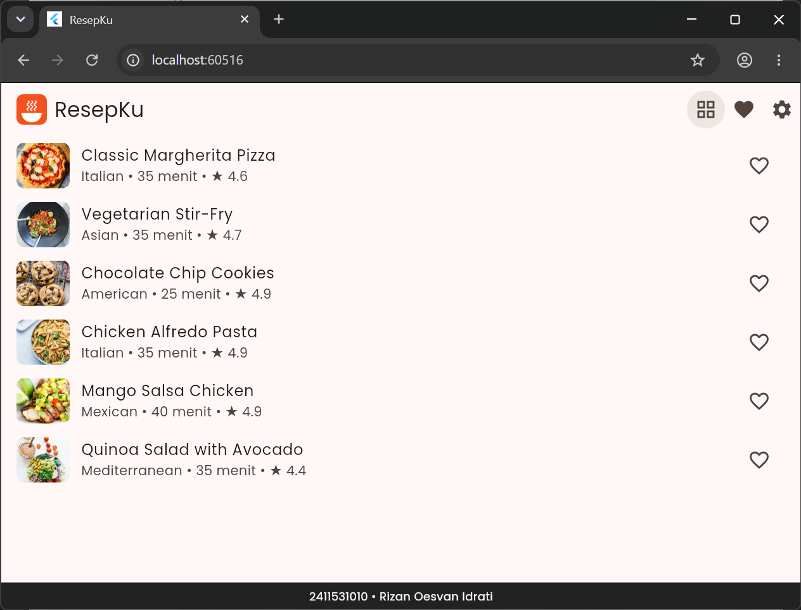
Checkpoint 1: Halaman Home dengan Logo dan Font PoppinsHalaman Home menampilkan logo di sebelah kiri judul ResepKu pada AppBar. Seluruh teks pada aplikasi, termasuk judul, nama resep, dan keterangan di bawahnya, kini menggunakan font Poppins yang terlihat dari bentuk huruf a dan g yang lebih bulat serta bentuk angka yang berbeda dari font bawaan.
Bagian B: ListView.builder dan Foto Resep
B.1 Membuat Widget RecipeImage
import 'package:flutter/material.dart';
/// Foto resep dari internet, lengkap dengan loading state dan error state.
class RecipeImage extends StatelessWidget {
const RecipeImage({super.key, required this.url, this.cacheWidth});
final String url;
/// Lebar (pixel) saat gambar di-decode. Gambar kecil cukup di-decode kecil,
/// sehingga memory yang dipakai jauh lebih sedikit.
final int? cacheWidth;
@override
Widget build(BuildContext context) {
return Image.network(
url,
fit: BoxFit.cover,
cacheWidth: cacheWidth,
// Loading state: tampil selama gambar masih diunduh.
loadingBuilder: (context, child, loadingProgress) {
if (loadingProgress == null) return child; // unduhan selesai
// Loading State
return ColoredBox(
color: Theme.of(context).colorScheme.surfaceContainerHighest,
child: const Center(child: Icon(Icons.restaurant_menu)),
);
},
// Error state: tampil jika URL salah atau tidak ada koneksi.
errorBuilder: (context, error, stackTrace) {
return Image.asset('assets/images/placeholder.png', fit: BoxFit.cover);
},
);
}
}Foto resep digunakan di tiga tempat, yaitu daftar resep, kartu grid, dan halaman detail, sehingga logika menampilkan foto dibuat sekali dalam widget RecipeImage. Widget ini menggunakan Image.network dengan BoxFit.cover agar foto mengisi seluruh area tanpa berubah proporsi, dengan bagian yang berlebih dipotong. Parameter loadingBuilder dipanggil berkali-kali selama foto diunduh; ketika loadingProgress bernilai null, unduhan sudah selesai sehingga foto asli (child) dikembalikan, sedangkan selama proses unduh ditampilkan kotak berwarna dengan ikon restaurant_menu. Parameter errorBuilder dipanggil ketika foto gagal dimuat, misalnya karena URL salah atau tidak ada koneksi, dan menampilkan gambar placeholder dari asset. Parameter cacheWidth bersifat opsional dan menentukan lebar foto dalam pixel ketika di-decode, sehingga foto berukuran besar dari server tidak harus disimpan di memory dalam ukuran aslinya.
B.2 Thumbnail di RecipeTile
import 'package:flutter/material.dart';
import 'package:provider/provider.dart';
import 'package:resepku/models/recipe.dart';
import 'package:resepku/pages/detail_page.dart';
import 'package:resepku/providers/favorite_provider.dart';
import 'package:resepku/widgets/recipe_image.dart';
class RecipeTile extends StatelessWidget {
const RecipeTile({super.key, required this.recipe});
final Recipe recipe;
@override
Widget build(BuildContext context) {
// watch: widget ini ikut rebuild saat daftar favorit berubah
final isFavorite = context.watch<FavoriteProvider>().isFavorite(recipe);
return ListTile(
leading: ClipRRect(
borderRadius: BorderRadius.circular(8),
child: SizedBox(
width: 56,
height: 56,
// 56 dp x 3 (kepadatan layar umum) = 168 pixel
child: RecipeImage(url: recipe.image, cacheWidth: 168),
),
),
title: Text(recipe.name),
subtitle: Text(
'${recipe.cuisine} • ${recipe.totalTimeMinutes} menit • ★ ${recipe.rating}',
),
trailing: IconButton(
icon: Icon(
isFavorite ? Icons.favorite : Icons.favorite_border,
color: isFavorite ? Colors.red : null,
),
// read: di dalam callback cukup "membaca", tidak perlu listen
onPressed: () => context.read<FavoriteProvider>().toggle(recipe),
),
onTap: () => Navigator.push(
context,
MaterialPageRoute(builder: (context) => DetailPage(recipe: recipe)),
),
);
}
}Perubahan pada RecipeTile hanya terdapat pada bagian leading. CircleAvatar berisi huruf inisial diganti dengan foto resep berukuran 56 x 56 dp yang dibungkus ClipRRect dengan radius 8 agar sudutnya membulat. Foto diberi cacheWidth 168 karena thumbnail tampil selebar 56 dp, dan pada layar dengan kepadatan tiga kali (devicePixelRatio 3) ukuran tersebut setara dengan 168 pixel fisik. Men-decode foto lebih besar dari ukuran itu hanya akan memboroskan memory. Bagian lain seperti tombol favorit dan navigasi ke halaman detail tidak berubah.
B.3 ListView.builder di HomePage
import 'package:flutter/material.dart';
import 'package:resepku/data/dummy_recipes.dart';
import 'package:resepku/widgets/favorite_badge_button.dart';
import 'package:resepku/widgets/recipe_tile.dart';
class HomePage extends StatelessWidget {
const HomePage({super.key});
@override
Widget build(BuildContext context) {
return Scaffold(
appBar: AppBar(
title: Row(
children: [
Image.asset('assets/images/logo.png', height: 32),
const SizedBox(width: 8),
const Text('ResepKu'),
],
),
actions: const [FavoriteBadgeButton()],
),
body: ListView.builder(
itemCount: dummyRecipes.length,
itemBuilder: (context, index) {
return RecipeTile(recipe: dummyRecipes[index]);
},
),
);
}
}Body HomePage yang sebelumnya berupa ListView dengan children diganti menjadi ListView.builder. Parameter itemCount diisi jumlah resep, sedangkan itemBuilder membuat RecipeTile untuk resep pada indeks tertentu. Berbeda dengan ListView biasa yang membuat seluruh item sekaligus, ListView.builder hanya membuat item yang akan tampil di layar, sehingga lebih hemat ketika jumlah data bertambah. Saat aplikasi pertama kali dibuka, kotak berikon muncul sebentar di setiap baris sebelum foto tampil, yang merupakan loading state dari RecipeImage.
B.4 Menguji Error State
Pengujian error state dilakukan dengan mengubah sementara URL foto resep pertama di dummy_recipes.dart menjadi alamat yang tidak valid, yaitu dengan mengganti ekstensi 1.webp menjadi 1.webpx, kemudian melakukan hot restart. Foto yang gagal dimuat diganti dengan gambar placeholder dari asset, dan aplikasi tetap berjalan tanpa menampilkan layar error merah. Setelah pengujian selesai, URL dikembalikan seperti sebelumnya.
Checkpoint 2
 Checkpoint 2: Halaman Home dengan Thumbnail Foto Resep
Checkpoint 2: Halaman Home dengan Thumbnail Foto Resep
Setiap baris pada daftar resep kini menampilkan thumbnail foto berukuran persegi dengan sudut membulat di sebelah kiri nama resep, menggantikan avatar berisi huruf inisial.
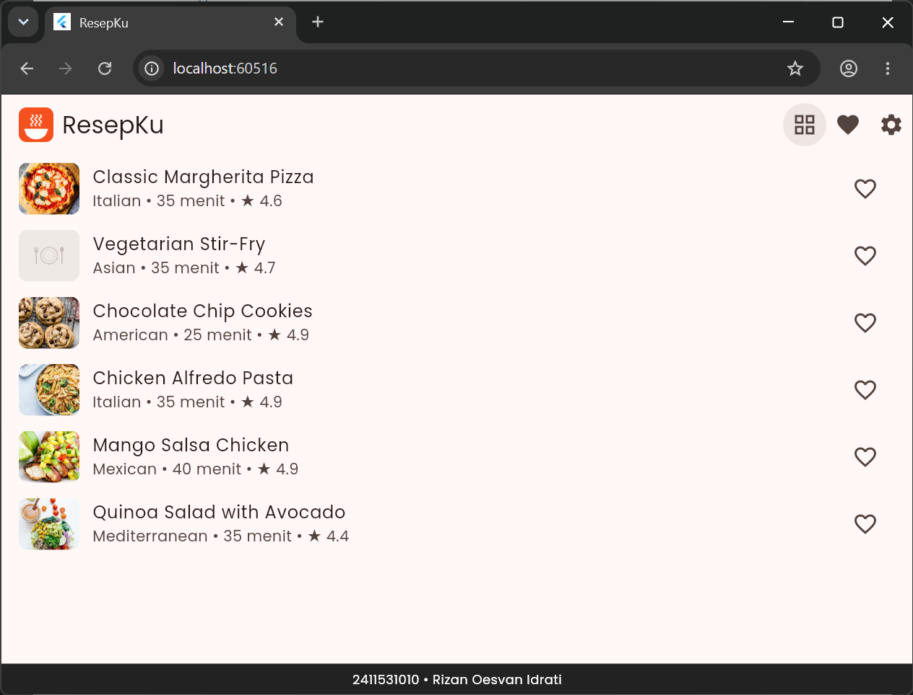
Checkpoint 2: Halaman Home saat Error State AktifKetika URL foto resep pertama tidak valid, thumbnail resep tersebut menampilkan gambar placeholder, sedangkan resep lain tetap menampilkan fotonya masing-masing. Hal ini menunjukkan bahwa errorBuilder berhasil menangani kegagalan memuat foto tanpa mengganggu bagian lain dari aplikasi.
Bagian C: GridView dan Tombol Ganti Tampilan
C.1 Membuat RecipeGridCard
import 'package:flutter/material.dart';
import 'package:provider/provider.dart';
import 'package:resepku/models/recipe.dart';
import 'package:resepku/pages/detail_page.dart';
import 'package:resepku/providers/favorite_provider.dart';
import 'package:resepku/widgets/recipe_image.dart';
class RecipeGridCard extends StatelessWidget {
const RecipeGridCard({super.key, required this.recipe});
final Recipe recipe;
@override
Widget build(BuildContext context) {
final isFavorite = context.watch<FavoriteProvider>().isFavorite(recipe);
final textTheme = Theme.of(context).textTheme;
return Card(
clipBehavior: Clip.antiAlias, // gambar ikut terpotong sesuai sudut Card
child: InkWell(
onTap: () => Navigator.push(
context,
MaterialPageRoute(builder: (context) => DetailPage(recipe: recipe)),
),
child: Column(
crossAxisAlignment: CrossAxisAlignment.stretch,
children: [
Expanded(
child: Stack(
fit: StackFit.expand,
children: [
RecipeImage(url: recipe.image, cacheWidth: 500),
Positioned(
top: 4,
right: 4,
child: IconButton.filledTonal(
icon: Icon(
isFavorite ? Icons.favorite : Icons.favorite_border,
color: isFavorite ? Colors.red : null,
),
onPressed: () =>
context.read<FavoriteProvider>().toggle(recipe),
),
),
],
),
),
Padding(
padding: const EdgeInsets.all(8),
child: Column(
crossAxisAlignment: CrossAxisAlignment.start,
children: [
Text(
recipe.name,
maxLines: 1,
overflow: TextOverflow.ellipsis,
style: textTheme.titleSmall,
),
const SizedBox(height: 2),
Text(
'★ ${recipe.rating} • ${recipe.totalTimeMinutes} menit',
style: textTheme.bodySmall,
),
],
),
),
],
),
),
);
}
}RecipeGridCard menampilkan satu resep dalam bentuk kartu untuk tampilan grid. Card diberi clipBehavior Clip.antiAlias agar foto ikut terpotong mengikuti sudut kartu yang membulat, dan seluruh kartu dibungkus InkWell sehingga dapat diketuk dengan efek ripple untuk membuka halaman detail. Bagian atas kartu menggunakan Expanded berisi Stack, sehingga foto mengisi sisa tinggi kartu dan tombol favorit dapat diletakkan di atas foto menggunakan Positioned di pojok kanan atas. Bagian bawah berisi nama resep yang dibatasi satu baris dengan maxLines dan TextOverflow.ellipsis agar nama yang panjang tidak menyebabkan overflow, diikuti rating dan total waktu memasak. Status favorit tetap dibaca dengan context.watch dan diubah dengan context.read seperti pada RecipeTile.
C.2 HomePage dengan List dan Grid
import 'package:flutter/material.dart';
import 'package:resepku/data/dummy_recipes.dart';
import 'package:resepku/widgets/favorite_badge_button.dart';
import 'package:resepku/widgets/recipe_grid_card.dart';
import 'package:resepku/widgets/recipe_tile.dart';
class HomePage extends StatefulWidget {
const HomePage({super.key});
@override
State<HomePage> createState() => _HomePageState();
}
class _HomePageState extends State<HomePage> {
bool _isGrid = false; // ephemeral state: hanya HomePage yang membutuhkan
@override
Widget build(BuildContext context) {
return Scaffold(
appBar: AppBar(
title: Row(
children: [
Image.asset('assets/images/logo.png', height: 32),
const SizedBox(width: 8),
const Text('ResepKu'),
],
),
actions: [
IconButton(
tooltip: _isGrid ? 'Tampilan list' : 'Tampilan grid',
icon: Icon(_isGrid ? Icons.view_list : Icons.grid_view),
onPressed: () => setState(() => _isGrid = !_isGrid),
),
const FavoriteBadgeButton(),
],
),
body: _isGrid ? _buildGrid() : _buildList(),
);
}
Widget _buildList() {
return ListView.builder(
itemCount: dummyRecipes.length,
itemBuilder: (context, index) {
return RecipeTile(recipe: dummyRecipes[index]);
},
);
}
Widget _buildGrid() {
return GridView.builder(
padding: const EdgeInsets.all(8),
gridDelegate: const SliverGridDelegateWithFixedCrossAxisCount(
crossAxisCount: 2,
mainAxisSpacing: 8,
crossAxisSpacing: 8,
childAspectRatio: 3 / 4, // lebar : tinggi
),
itemCount: dummyRecipes.length,
itemBuilder: (context, index) {
return RecipeGridCard(recipe: dummyRecipes[index]);
},
);
}
}HomePage diubah menjadi StatefulWidget karena kini memiliki state _isGrid yang menentukan tampilan aktif, dengan nilai awal false sehingga daftar resep ditampilkan sebagai list. State ini cukup dikelola dengan setState karena hanya dibutuhkan oleh HomePage. Tombol pada actions AppBar membalik nilai _isGrid, dengan ikon dan tooltip yang menyesuaikan tampilan yang akan dipilih. Body memanggil _buildGrid atau _buildList sesuai nilai _isGrid. Method _buildGrid menggunakan GridView.builder dengan SliverGridDelegateWithFixedCrossAxisCount yang mengatur grid selalu terdiri dari dua kolom, jarak antarkartu 8 baik secara vertikal maupun horizontal, serta childAspectRatio 3/4 sehingga kartu lebih tinggi daripada lebarnya agar foto dan teks dapat termuat.
C.3 Menghitung Ukuran Kartu
Ukuran kartu grid dihitung untuk HP dengan lebar layar 360 dp. Lebar kartu diperoleh dari lebar layar dikurangi padding kiri dan kanan GridView, lalu dikurangi jarak antarkolom, kemudian dibagi jumlah kolom. Tinggi kartu diperoleh dari lebar kartu dibagi childAspectRatio.
| Yang dihitung | Langkah perhitungan | Hasil |
|---|---|---|
| Lebar area grid | 360 − (8 + 8) = 344 | 344 dp |
| Lebar kartu (dp) | (344 − 8) / 2 = 336 / 2 | 168 dp |
| Tinggi kartu (dp) | 168 / (3/4) = 168 × 4/3 | 224 dp |
Dengan dua kolom, terdapat satu jarak crossAxisSpacing sebesar 8 dp di antara kedua kartu, sehingga lebar setiap kartu adalah 168 dp. Karena childAspectRatio merupakan perbandingan lebar terhadap tinggi, tinggi kartu adalah 168 dibagi 0,75, yaitu 224 dp.
Bagian D: Foto di Halaman Detail dan Pengujian
D.1 Foto Besar di Halaman Detail
import 'package:resepku/widgets/recipe_image.dart';ClipRRect(
borderRadius: BorderRadius.circular(16),
child: AspectRatio(
aspectRatio: 16 / 9,
child: RecipeImage(url: recipe.image),
),
),
const SizedBox(height: 16),RecipeImage digunakan kembali pada halaman detail dan diletakkan sebagai child pertama ListView. Foto dibungkus AspectRatio 16/9 agar tingginya menyesuaikan lebar layar dengan proporsi yang tetap, dan ClipRRect dengan radius 16 agar sudutnya membulat. Pada halaman ini cacheWidth tidak diisi, karena foto tampil hampir selebar layar sehingga membutuhkan resolusi yang lebih besar dibandingkan thumbnail.
D.2 Pengujian Aplikasi
| No | Skenario | Hasil yang Diharapkan | Sesuai? |
|---|---|---|---|
| 1 | Buka aplikasi | Logo di AppBar, font Poppins, thumbnail foto di setiap resep | ✓ |
| 2 | Tekan tombol grid di AppBar | Resep tampil sebagai kartu dua kolom; ikon tombol berubah menjadi ikon list | ✓ |
| 3 | Di mode grid, tap ikon hati pada Margherita | Ikon merah dan badge bertambah | ✓ |
| 4 | Kembali ke mode list | Ikon hati Margherita tetap merah | ✓ |
| 5 | Tap kartu Alfredo di mode grid | Halaman detail terbuka dengan foto besar di atas | ✓ |
| 6 | Putuskan koneksi internet, lalu jalankan ulang aplikasi | Gambar placeholder tampil tanpa error merah | ✓ |
Keenam skenario memberikan hasil sesuai dengan yang diharapkan. Skenario 3 dan 4 menunjukkan bahwa status favorit tetap konsisten meskipun tampilan berganti antara grid dan list, sedangkan skenario 6 menunjukkan bahwa error state mampu menangani kondisi ketika foto tidak dapat diunduh.
Checkpoint 3
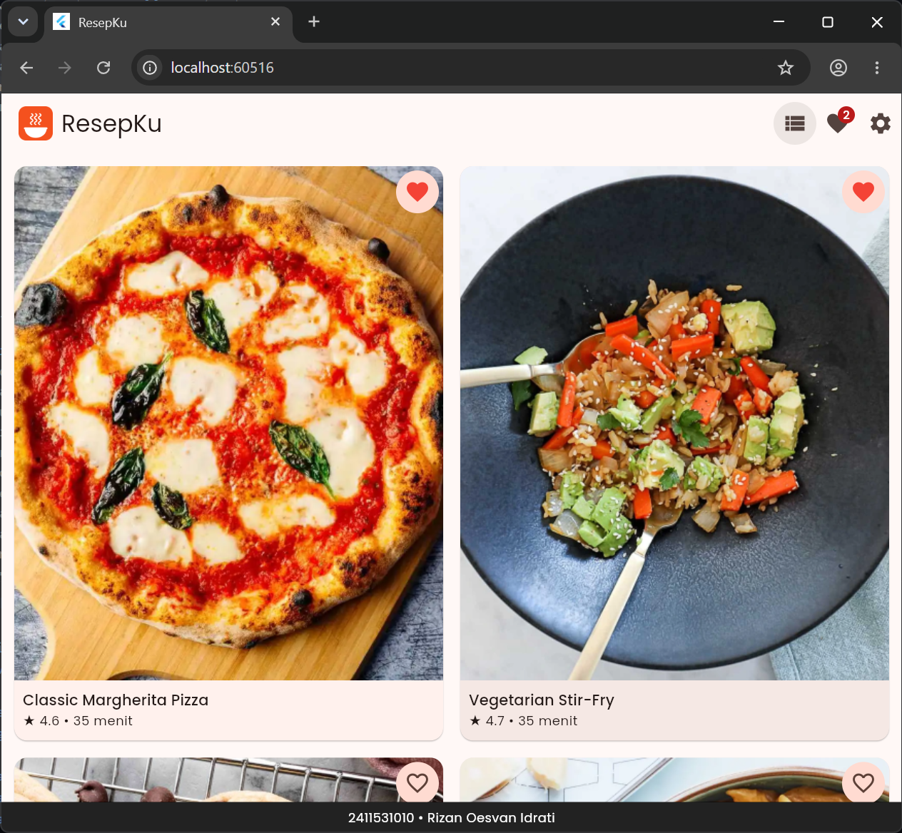
Checkpoint 3: Halaman Home Mode Grid dengan Resep FavoritPada mode grid, resep ditampilkan sebagai kartu dua kolom dengan foto di bagian atas. Resep yang difavoritkan menampilkan ikon hati merah di pojok kanan atas foto, dan badge pada AppBar menunjukkan jumlah resep favorit. Ikon tombol tampilan di AppBar berubah menjadi ikon list.
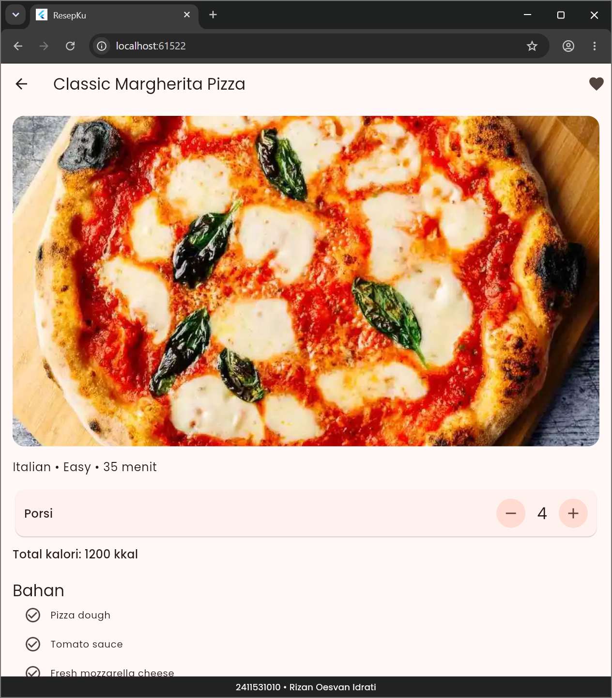
Checkpoint 3: Halaman Detail dengan Foto BesarHalaman detail menampilkan foto resep berukuran besar di bagian atas dengan sudut membulat, diikuti informasi resep, pengatur porsi, total kalori, dan daftar bahan.
3. Pertanyaan Analisis
1. Mengapa status favorit tetap sama saat tampilan berganti dari grid ke list? Status favorit tidak disimpan di dalam RecipeGridCard maupun RecipeTile, melainkan pada FavoriteProvider yang dipasang di atas MaterialApp. Kedua widget hanya membaca status tersebut melalui context.watch<FavoriteProvider>().isFavorite(recipe) dan mengubahnya melalui toggle(). Ketika tombol ganti tampilan ditekan, setState pada HomePage membuang widget kartu grid dan membuat widget RecipeTile yang baru, tetapi data di FavoriteProvider tidak ikut berubah. Karena kedua widget membaca sumber data yang sama dan mencocokkan resep berdasarkan id, RecipeTile yang baru dibuat langsung menampilkan ikon hati yang sama dengan kartu grid sebelumnya.
2. Apa yang tampil jika baris
if (loadingProgress == null) return child; dihapus? Foto resep tidak akan pernah tampil,
dan setiap gambar akan terus menampilkan kotak berwarna dengan ikon restaurant_menu. Hal ini terjadi karena
loadingBuilder tidak hanya dipanggil selama foto diunduh, tetapi juga dipanggil sekali lagi setelah unduhan
selesai dengan loadingProgress bernilai null. Apa pun yang dikembalikan loadingBuilder itulah yang
ditampilkan di layar, sehingga tanpa baris tersebut child yang berisi foto asli tidak pernah dikembalikan,
dan foto yang sebenarnya sudah selesai diunduh tetap tertutup oleh tampilan loading.
| Kondisi | Ukuran decode | Jumlah pixel | Memory per foto (4 byte/pixel) | Memory 50 resep |
|---|---|---|---|---|
| Tanpa cacheWidth | 1200 × 800 | 960.000 | ± 3,84 MB | ± 192 MB |
| Dengan cacheWidth: 168 | 168 × 112 | 18.816 | ± 75 KB | ± 3,8 MB |
3. Perhitungan pixel thumbnail dengan dan tanpa cacheWidth. Tanpa cacheWidth, foto di-decode dalam ukuran aslinya yaitu 1200 x 800 = 960.000 pixel. Dengan cacheWidth: 168, lebar foto di-decode menjadi 168 pixel dan tingginya menyesuaikan proporsi asli, yaitu 800 / 1200 x 168 = 112 pixel, sehingga jumlahnya hanya 168 x 112 = 18.816 pixel, sekitar 51 kali lebih sedikit. Karena setiap pixel memerlukan 4 byte (RGBA), satu foto tanpa cacheWidth menghabiskan sekitar 3,84 MB memory, sedangkan dengan cacheWidth hanya sekitar 75 KB. Ketika data bertambah menjadi 50 resep, thumbnail tanpa cacheWidth dapat membutuhkan sekitar 192 MB, jauh melebihi kebutuhan sebenarnya untuk gambar berukuran 56 dp. Akibatnya memory cepat penuh, gambar lebih sering dibuang lalu di-decode ulang dari cache, scroll menjadi tersendat, dan pada perangkat dengan memory kecil aplikasi berisiko ditutup paksa oleh sistem. Dengan cacheWidth, kebutuhan memory untuk 50 thumbnail hanya sekitar 3,8 MB.
4. Mengapa logo memakai Image.asset dan foto resep memakai Image.network? Logo merupakan bagian dari identitas aplikasi yang selalu tampil sejak aplikasi dibuka, berukuran kecil, dan tidak pernah berubah. Jika diambil dari internet, logo akan bergantung pada koneksi, sempat kosong selama diunduh, dan dapat gagal tampil ketika pengguna sedang offline, padahal logo seharusnya tersedia kapan pun. Sebaliknya, foto resep jumlahnya banyak, berukuran besar, dan mengikuti data resep yang dapat bertambah atau berubah. Jika seluruh foto dimasukkan ke asset, ukuran file aplikasi akan membengkak, dan setiap penambahan resep baru mengharuskan aplikasi di-build dan diperbarui ulang, karena asset hanya dapat ditambahkan saat proses build. Dengan Image.network, foto cukup diunduh ketika dibutuhkan dan selalu mengikuti data terbaru dari server.
4. Latihan
Latihan 1: Filter Cuisine
A. Filter Cuisine pada HomePage
import 'package:flutter/material.dart';
import 'package:resepku/data/dummy_recipes.dart';
import 'package:resepku/models/recipe.dart';
import 'package:resepku/pages/settings_page.dart';
import 'package:resepku/widgets/favorite_badge_button.dart';
import 'package:resepku/widgets/recipe_grid_card.dart';
import 'package:resepku/widgets/recipe_tile.dart';
class HomePage extends StatefulWidget {
const HomePage({super.key});
@override
State<HomePage> createState() => _HomePageState();
}
class _HomePageState extends State<HomePage> {
bool _isGrid = false;
String? _cuisine;
final List<String> _cuisines =
dummyRecipes.map((r) => r.cuisine).toSet().toList();
List<Recipe> get _filteredRecipes {
if (_cuisine == null) return dummyRecipes;
return dummyRecipes.where((r) => r.cuisine == _cuisine).toList();
}
@override
Widget build(BuildContext context) {
final recipes = _filteredRecipes;
return Scaffold(
appBar: AppBar(
title: Row(
children: [
Image.asset('assets/images/logo.png', height: 32),
const SizedBox(width: 8),
const Text('ResepKu'),
],
),
actions: [
IconButton(
tooltip: _isGrid ? 'Tampilan list' : 'Tampilan grid',
icon: Icon(_isGrid ? Icons.view_list : Icons.grid_view),
onPressed: () => setState(() => _isGrid = !_isGrid),
),
const FavoriteBadgeButton(),
IconButton(
tooltip: 'Pengaturan',
icon: const Icon(Icons.settings),
onPressed: () => Navigator.push(
context,
MaterialPageRoute(builder: (context) => const SettingsPage()),
),
),
],
),
body: Column(
children: [
SizedBox(
height: 56,
child: ListView(
scrollDirection: Axis.horizontal,
padding: const EdgeInsets.symmetric(horizontal: 8),
children: [
_buildChip('Semua', null),
for (final cuisine in _cuisines) _buildChip(cuisine, cuisine),
],
),
),
Expanded(
child: _isGrid ? _buildGrid(recipes) : _buildList(recipes),
),
],
),
);
}
Widget _buildChip(String label, String? value) {
return Padding(
padding: const EdgeInsets.symmetric(horizontal: 4),
child: Center(
child: ChoiceChip(
label: Text(label),
selected: _cuisine == value,
onSelected: (_) => setState(() => _cuisine = value),
),
),
);
}
Widget _buildList(List<Recipe> recipes) {
return ListView.builder(
itemCount: recipes.length,
itemBuilder: (context, index) {
return RecipeTile(recipe: recipes[index]);
},
);
}
Widget _buildGrid(List<Recipe> recipes) {
return GridView.builder(
padding: const EdgeInsets.all(8),
gridDelegate: const SliverGridDelegateWithFixedCrossAxisCount(
crossAxisCount: 2,
mainAxisSpacing: 8,
crossAxisSpacing: 8,
childAspectRatio: 3 / 4,
),
itemCount: recipes.length,
itemBuilder: (context, index) {
return RecipeGridCard(recipe: recipes[index]);
},
);
}
}Pada _HomePageState ditambahkan state _cuisine bertipe String? dengan nilai awal null yang berarti seluruh cuisine ditampilkan. Daftar cuisine tidak ditulis manual, melainkan diambil dari data dan disimpan pada variabel _cuisines. Setiap resep dipetakan ke cuisine-nya, lalu diubah menjadi Set agar tidak ada nilai ganda, kemudian dikembalikan menjadi List. Getter _filteredRecipes mengembalikan seluruh resep apabila _cuisine bernilai null, atau hanya resep dengan cuisine yang sama apabila sebuah cuisine dipilih.
Body HomePage diubah menjadi Column. Bagian atasnya berisi SizedBox setinggi 56 yang membungkus ListView horizontal berisi ChoiceChip, karena ListView horizontal di dalam Column harus diberi tinggi yang pasti. Chip pertama bertuliskan Semua dengan nilai null, diikuti satu chip untuk setiap cuisine. Setiap chip dibangun melalui method _buildChip, dibungkus Center agar tingginya tidak ikut diregangkan, dan memanggil setState untuk mengganti _cuisine ketika dipilih. Bagian bawah Column berupa Expanded yang berisi list atau grid, sehingga tampilan tersebut mengisi sisa tinggi layar. Data yang sudah difilter dikirim sebagai parameter ke _buildList dan _buildGrid, sehingga filter berlaku pada kedua mode tampilan. Tombol Pengaturan untuk mode gelap tetap dipertahankan pada AppBar.
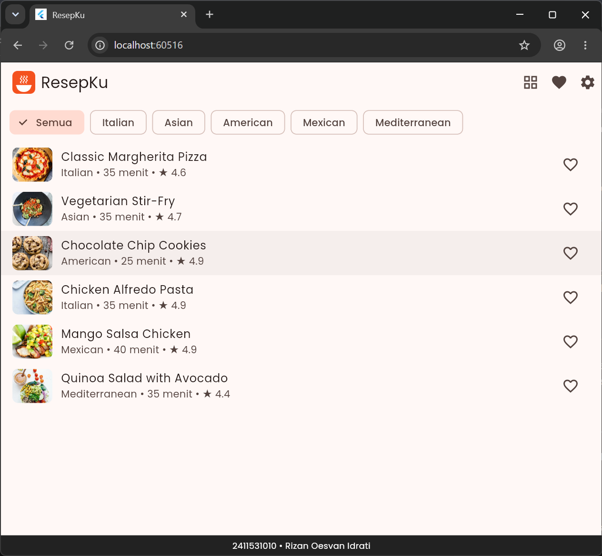
Hasil Tampilan: Mode List dengan Filter SemuaDeretan chip tampil di bawah AppBar dengan chip Semua terpilih, sehingga seluruh resep ditampilkan pada mode list. Deretan chip dapat digeser ke samping untuk melihat cuisine lainnya.
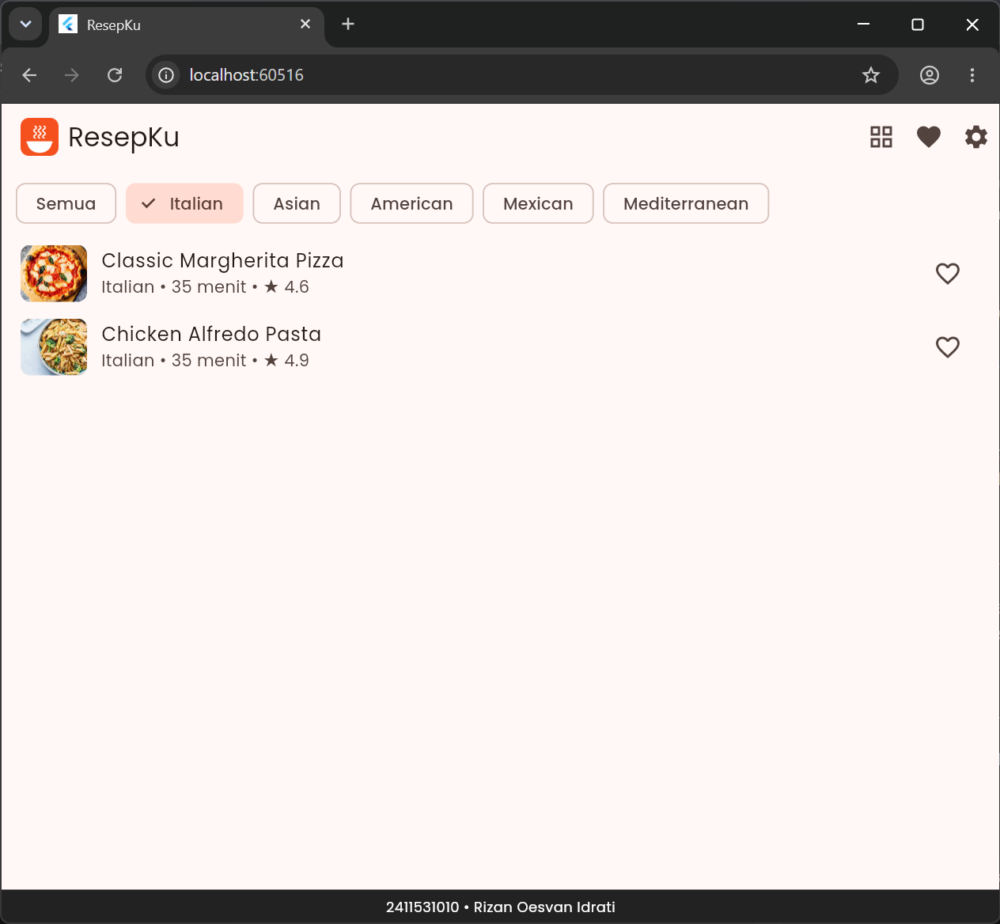
Hasil Tampilan: Mode List dengan Filter ItalianKetika chip Italian dipilih, daftar hanya menampilkan resep dengan cuisine Italian, yaitu Classic Margherita Pizza dan Chicken Alfredo Pasta.
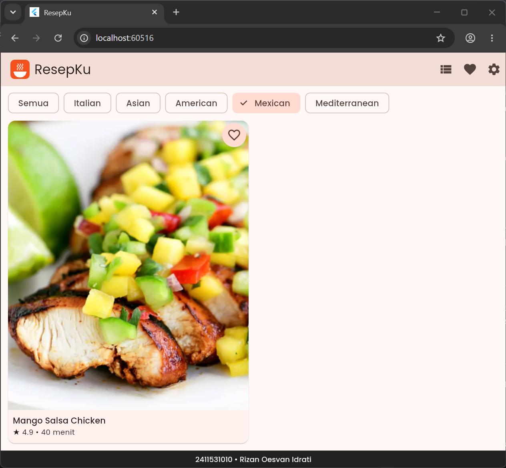
Hasil Tampilan: Mode Grid dengan Filter ItalianSetelah berpindah ke mode grid, filter yang dipilih tetap berlaku sehingga kartu yang tampil hanya resep Italian. Hal ini menunjukkan bahwa state _cuisine dan _isGrid bekerja secara terpisah dan dapat dikombinasikan.
Latihan 2: Halaman Favorit yang Lebih Rapi
A. ListView.separated, Thumbnail, dan Dismissible
import 'package:flutter/material.dart';
import 'package:provider/provider.dart';
import 'package:resepku/providers/favorite_provider.dart';
import 'package:resepku/widgets/recipe_image.dart';
class FavoritePage extends StatelessWidget {
const FavoritePage({super.key});
Future<void> _confirmClearAll(BuildContext context) async {
final confirmed = await showDialog<bool>(
context: context,
builder: (dialogContext) => AlertDialog(
title: const Text('Hapus semua favorit?'),
content: const Text('Semua resep akan dihapus dari daftar favorit.'),
actions: [
TextButton(
onPressed: () => Navigator.pop(dialogContext, false),
child: const Text('Batal'),
),
TextButton(
onPressed: () => Navigator.pop(dialogContext, true),
child: const Text('Hapus'),
),
],
),
);
if (confirmed == true && context.mounted) {
context.read<FavoriteProvider>().clear();
}
}
@override
Widget build(BuildContext context) {
final count = context.watch<FavoriteProvider>().count;
return Scaffold(
appBar: AppBar(
title: const Text('Favorit Saya'),
actions: [
IconButton(
tooltip: 'Hapus semua',
icon: const Icon(Icons.delete_sweep),
onPressed: count == 0 ? null : () => _confirmClearAll(context),
),
],
),
body: Consumer<FavoriteProvider>(
builder: (context, favorite, child) {
if (favorite.count == 0) {
return const Center(
child: Text(
'Belum ada resep favorit.\nTekan ikon hati di daftar resep.',
textAlign: TextAlign.center,
),
);
}
final items = favorite.items;
return ListView.separated(
itemCount: items.length,
separatorBuilder: (context, index) => const Divider(height: 1),
itemBuilder: (context, index) {
final recipe = items[index];
return Dismissible(
key: ValueKey(recipe.id),
direction: DismissDirection.endToStart,
background: Container(
color: Colors.red,
alignment: Alignment.centerRight,
padding: const EdgeInsets.symmetric(horizontal: 20),
child: const Icon(Icons.delete, color: Colors.white),
),
onDismissed: (_) {
favorite.toggle(recipe);
ScaffoldMessenger.of(context).showSnackBar(
SnackBar(content: Text('${recipe.name} dihapus dari favorit')),
);
},
child: ListTile(
leading: ClipRRect(
borderRadius: BorderRadius.circular(8),
child: SizedBox(
width: 56,
height: 56,
child: RecipeImage(url: recipe.image, cacheWidth: 168),
),
),
title: Text(recipe.name),
subtitle: Text(recipe.cuisine),
),
);
},
);
},
),
);
}
}Daftar favorit kini dibangun menggunakan ListView.separated, dengan separatorBuilder yang menyisipkan Divider di antara setiap item. Setiap baris menampilkan thumbnail foto menggunakan RecipeImage berukuran 56 x 56 dengan cacheWidth 168, sama seperti thumbnail pada daftar resep di halaman Home, diikuti nama resep dan cuisine-nya.
Setiap ListTile dibungkus Dismissible dengan direction endToStart sehingga item hanya dapat digeser ke kiri. Saat digeser, terlihat latar berwarna merah dengan ikon hapus di sisi kanan. Dismissible diberi key berupa ValueKey(recipe.id), karena key tersebut unik untuk setiap resep dan tidak berubah meskipun urutan item bergeser setelah ada item yang dihapus. Penggunaan indeks sebagai key tidak tepat karena indeks item di bawahnya akan berubah ketika satu item dihapus. Ketika item selesai digeser, onDismissed memanggil toggle() untuk mengeluarkan resep dari daftar favorit, lalu menampilkan SnackBar berisi nama resep yang dihapus. Tombol Hapus semua dengan dialog konfirmasi tetap dipertahankan pada AppBar.
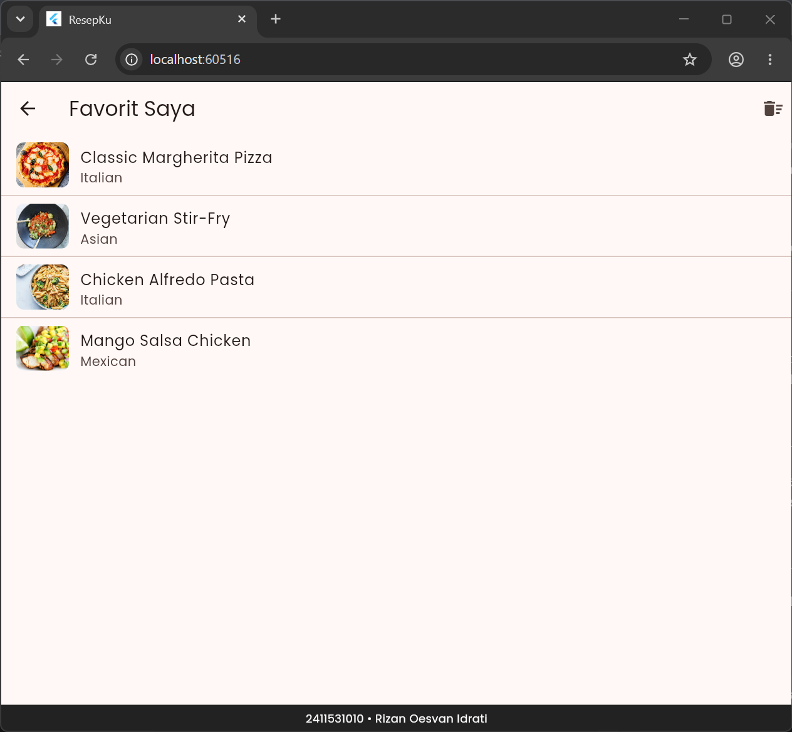
Hasil Tampilan: Halaman Favorit dengan Thumbnail dan DividerHalaman Favorit menampilkan setiap resep favorit lengkap dengan thumbnail foto di sebelah kiri, dengan garis pemisah di antara setiap item.
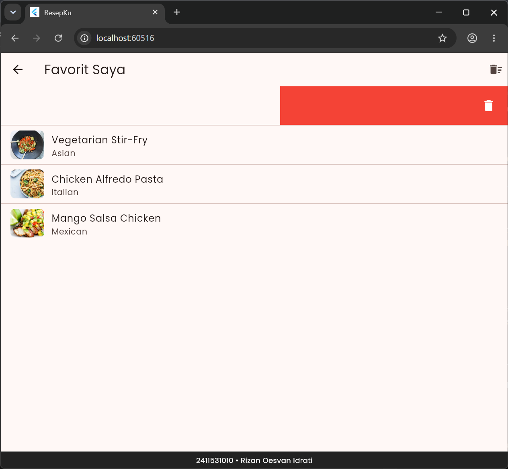
Hasil Tampilan: Item Favorit saat Digeser ke KiriKetika sebuah item digeser ke kiri, latar berwarna merah dengan ikon hapus terlihat di bawah item tersebut sebagai penanda bahwa item akan dihapus dari daftar favorit.
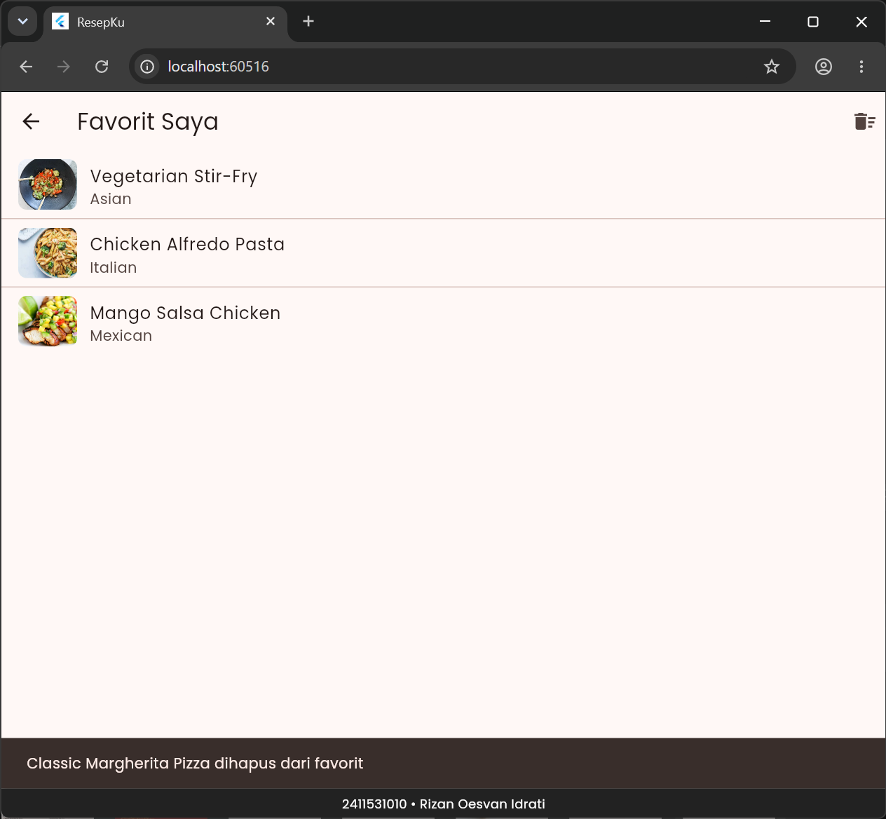
Hasil Tampilan: SnackBar Setelah Item Favorit DihapusSetelah item selesai digeser, resep tersebut hilang dari daftar dan SnackBar muncul di bagian bawah layar berisi nama resep yang dihapus. Jumlah pada badge di halaman Home juga ikut berkurang.
Latihan 3 (Bonus): Foto yang Mengecil saat Di-scroll
A. CustomScrollView dan SliverAppBar
flutter pub add cached_network_imageimport 'package:cached_network_image/cached_network_image.dart';
import 'package:flutter/material.dart';
import 'package:provider/provider.dart';
import 'package:resepku/models/recipe.dart';
import 'package:resepku/providers/favorite_provider.dart';
class DetailPage extends StatefulWidget {
const DetailPage({super.key, required this.recipe});
final Recipe recipe;
@override
State<DetailPage> createState() => _DetailPageState();
}
class _DetailPageState extends State<DetailPage> {
late int _servings;
@override
void initState() {
super.initState();
_servings = widget.recipe.servings;
}
void _addServing() {
setState(() => _servings++);
}
void _removeServing() {
if (_servings > 1) {
setState(() => _servings--);
}
}
@override
Widget build(BuildContext context) {
final recipe = widget.recipe;
final totalCalories = recipe.caloriesPerServing * _servings;
final isFavorite = context.watch<FavoriteProvider>().isFavorite(recipe);
final textTheme = Theme.of(context).textTheme;
final colorScheme = Theme.of(context).colorScheme;
return Scaffold(
body: CustomScrollView(
slivers: [
SliverAppBar(
pinned: true,
expandedHeight: 260,
backgroundColor: colorScheme.primary,
foregroundColor: Colors.white,
actions: [
IconButton(
icon: Icon(isFavorite ? Icons.favorite : Icons.favorite_border),
onPressed: () => context.read<FavoriteProvider>().toggle(recipe),
),
],
flexibleSpace: FlexibleSpaceBar(
title: Text(
recipe.name,
maxLines: 1,
overflow: TextOverflow.ellipsis,
style: const TextStyle(color: Colors.white),
),
background: Stack(
fit: StackFit.expand,
children: [
CachedNetworkImage(
imageUrl: recipe.image,
fit: BoxFit.cover,
placeholder: (context, url) => ColoredBox(
color: colorScheme.surfaceContainerHighest,
child: const Center(child: Icon(Icons.restaurant_menu)),
),
errorWidget: (context, url, error) => Image.asset(
'assets/images/placeholder.png',
fit: BoxFit.cover,
),
),
const DecoratedBox(
decoration: BoxDecoration(
gradient: LinearGradient(
begin: Alignment.topCenter,
end: Alignment.bottomCenter,
colors: [Colors.black38, Colors.transparent, Colors.black54],
),
),
),
],
),
),
),
SliverToBoxAdapter(
child: Padding(
padding: const EdgeInsets.all(16),
child: Column(
crossAxisAlignment: CrossAxisAlignment.start,
children: [
Text(
'${recipe.cuisine} • ${recipe.difficulty} • ${recipe.totalTimeMinutes} menit',
style: textTheme.bodyLarge,
),
const SizedBox(height: 16),
Card(
child: Padding(
padding: const EdgeInsets.all(12),
child: Row(
children: [
Text('Porsi', style: textTheme.titleMedium),
const Spacer(),
IconButton.filledTonal(
onPressed: _servings > 1 ? _removeServing : null,
icon: const Icon(Icons.remove),
),
Padding(
padding: const EdgeInsets.symmetric(horizontal: 16),
child: Text('$_servings', style: textTheme.titleLarge),
),
IconButton.filledTonal(
onPressed: _addServing,
icon: const Icon(Icons.add),
),
],
),
),
),
const SizedBox(height: 8),
Text('Total kalori: $totalCalories kkal', style: textTheme.titleMedium),
const SizedBox(height: 24),
Text('Bahan', style: textTheme.titleLarge),
],
),
),
),
SliverList.builder(
itemCount: recipe.ingredients.length,
itemBuilder: (context, index) => ListTile(
dense: true,
leading: const Icon(Icons.check_circle_outline),
title: Text(recipe.ingredients[index]),
),
),
],
),
);
}
}Halaman detail diubah dari ListView menjadi CustomScrollView yang tersusun atas beberapa sliver. Sliver pertama adalah SliverAppBar dengan expandedHeight 260 dan pinned bernilai true, sehingga AppBar tampil tinggi saat halaman dibuka, mengecil ketika halaman di-scroll, dan tetap menempel di bagian atas layar. Foto resep ditempatkan sebagai background FlexibleSpaceBar dan diberi lapisan gradasi gelap di bagian atas dan bawah agar tombol kembali, ikon favorit, dan judul resep berwarna putih tetap terbaca di atas foto.
Foto pada SliverAppBar ditampilkan menggunakan CachedNetworkImage dari package cached_network_image, sehingga foto yang sudah pernah diunduh disimpan di penyimpanan perangkat dan tidak perlu diunduh ulang ketika aplikasi dibuka kembali. Parameter placeholder dan errorWidget berperan sama seperti loadingBuilder dan errorBuilder pada RecipeImage. Bagian pengatur porsi dan judul Bahan diletakkan di dalam SliverToBoxAdapter karena berupa widget biasa, sedangkan daftar bahan dibangun dengan SliverList.builder agar item dibuat secara lazy seperti ListView.builder. Pengelolaan porsi dengan setState dan status favorit dengan Provider tidak berubah.
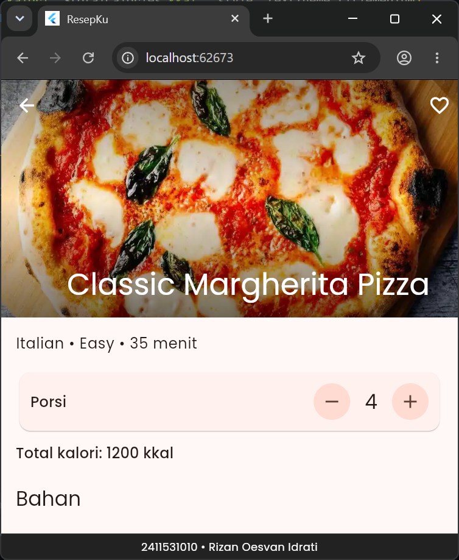
Hasil Tampilan: Halaman Detail dengan Foto Besar di SliverAppBarSaat halaman detail dibuka, foto resep tampil besar di bagian atas dengan judul resep di bagian bawah foto, serta tombol kembali dan ikon favorit di bagian atas.
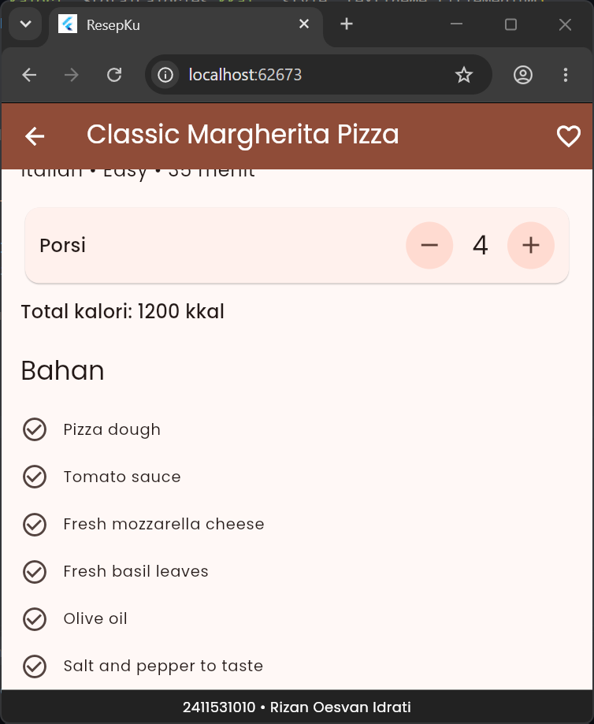
Hasil Tampilan: Halaman Detail Setelah Di-scrollKetika halaman di-scroll ke bawah, foto mengecil secara bertahap hingga berubah menjadi AppBar biasa berwarna tema yang tetap menempel di atas layar, sementara daftar bahan terus bergulir di bawahnya.
5. Kesimpulan
Berdasarkan praktikum yang telah dilakukan, dapat disimpulkan bahwa pemilihan sumber gambar perlu disesuaikan dengan sifat gambarnya. Gambar yang kecil, tetap, dan harus selalu tersedia seperti logo dan placeholder lebih tepat disimpan sebagai asset yang didaftarkan di pubspec.yaml, sedangkan foto resep yang banyak dan mengikuti data lebih tepat diambil dari internet menggunakan Image.network. Gambar dari internet perlu dilengkapi loading state dan error state agar aplikasi tetap nyaman digunakan ketika koneksi lambat atau terputus, serta cacheWidth agar foto berukuran besar tidak memboroskan memory ketika hanya ditampilkan sebagai thumbnail. ListView.builder dan GridView.builder membuat item secara lazy sehingga efisien untuk data dalam jumlah besar, dan keduanya dapat dipilih dengan state lokal tanpa mengganggu status favorit yang disimpan di Provider. Penambahan filter cuisine dan halaman Favorit dengan Dismissible juga menunjukkan bahwa state lokal dan state global dapat digunakan bersama untuk membangun tampilan yang lebih interaktif.